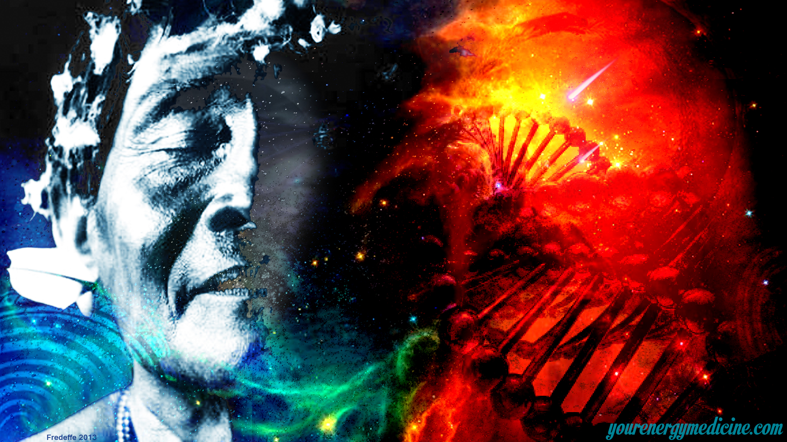

..Не надо мне искать никакого духа Полярной Звезды. Я и есть дух Полярной Звезды, и сам себе главный шаман. И вообще все духи, люди и вещи, которые только могут быть, -это и есть я сам. Поэтому играть надо не на инструментах, а на себе, только на себе. Какие законы или ноты могут тогда что-то значить? Нет никаких
созвучий ... Каждый сам себе музыка ...
Пелевин В. "Бубен верхнего мира"
